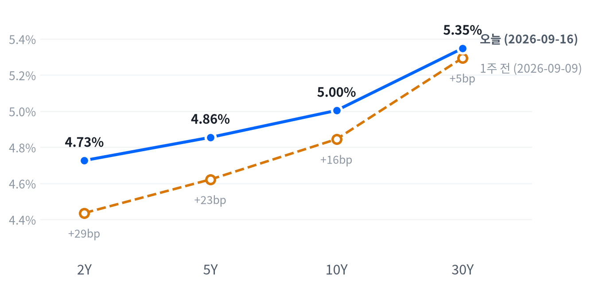

US MARKET BRIEF
FOMC 25bp 인상 뒤 단기금리·달러 상승, 지수 혼조
미국 2026년 9월 16일 거래일 · 한국 9월 17일 발행. 가격은 일간 종가, 장중 경로는 30분봉 기준.
이날 3대 지수는 엇갈렸다. 다우는 51,461.90(-1.21%), S&P 500은 7,551.81(-0.45%), 나스닥은 25,978.42(-0.01%)로 마감했다. 연준은 기준금리를 25bp 올려 목표 범위를 3.75~4.00%로 정했고 달러는 강세를 보였다.
실제 FOMC 25bp 인상 뒤 2년물 금리와 달러가 올랐지만, 10년물은 5.004%로 0.8bp 상승하고 30년물은 1.5bp 하락했다. 멀티에셋 전략은 전일 책을 승계한다.
전략 코멘트
FOMC는 25bp 인상으로 목표 범위를 3.75~4.00%로 올렸다. 시장에서는 2년물 4.727%(+6.4bp), 10년물 5.004%(+0.8bp), DXY 100.34(+0.69%)가 함께 움직였고 WTI는 102.00달러(-3.62%)로 내려갔다.
인상은 단기 정책금리 경로와 달러에 즉시 반영됐지만 장기물은 혼조였다. 2s10s는 27.7bp로 단기 금리 상승폭이 더 컸고 30년물은 5.348%로 1.5bp 내렸다. 할인율 충격을 모든 만기에 동일하게 적용할 수 없는 하루였다.
오늘의 결정은 유지이며 시계는 다음 종가와 새 물가·고용 자료다. 실제 FOMC 결과만으로 등급을 다시 쓰지 않고, 가격 트리거가 충족되는지 다음 세션에 확인한다.
채권 숏 바이어스는 30년물이 5.05% 아래로 내려가거나 새 자료가 완화 경로를 뒷받침할 때 재검토한다. 반대로 단기 금리 상승이 이어지는지는 다음 종가에서 확인한다.
오늘의 장
아시아는 닛케이(-0.01%)·항셍(-1.00%)·상해종합(-0.54%)이 모두 내렸고, 유럽도 DAX(-0.15%)·FTSE100(-0.37%)·유로스톡스50(-0.38%)이 함께 하락했다. 두 지역의 약세가 미국 장의 하락과 같은 방향이었다.
| 지수 | 종가 | 등락 | 기준일 |
|---|---|---|---|
| 닛케이 | 63,484.10 | -0.01% | 2026-09-15 |
| 항셍 | 24,667.24 | -1.00% | 2026-09-15 |
| 상해종합 | 3,864.28 | -0.54% | 2026-09-15 |
| DAX | 25,402.28 | -0.15% | 2026-09-15 |
| FTSE100 | 10,658.10 | -0.37% | 2026-09-15 |
| 유로스톡스50 | 6,236.50 | -0.38% | 2026-09-15 |
| VIX | 17.71 | +2.97% | 2026-09-16 |
미국 선물은 S&P 선물 7,689.25 고점(08:00 ET)에서 7,656.50 저점(16:00 ET)으로 움직였고, 정규장은 상승 출발 뒤 하락했다. 현물 30분봉은 S&P와 나스닥 모두 11:30 ET 고점, 15:00 ET 저점이었다.
마감 위치는 S&P 500 38, 나스닥 43, 러셀2000 48로 세 지수 모두 중단권이었다. 나스닥이 저점권에서 끝났다는 전일 서술은 오늘 데이터와 맞지 않는다.
마감 위치는 당일 고저 대비 종가의 위치다. 최근 2,256거래일 보정 기준 고점권 경계는 84.6, 저점권 경계는 25.2다.
이날 움직임의 중심은 FOMC 결과와 기자회견 뒤의 단기 금리·달러 재가격이었다. AP는 높은 물가와 견조한 경제 진단을 하락 전환의 맥락으로 전했고, Reuters는 단기채 금리 상승과 금융·에너지 약세를 함께 설명했다. WTI는 공급 차질 우려가 완화되며 3.62% 하락했다.
아시아는 닛케이 -0.01%·항셍 -1.00%·상해종합 -0.54%로 마감했습니다. 유럽은 DAX -0.15%·FTSE100 -0.37%·유로스톡스50 -0.38%였습니다. 미국 S&P 500은 -0.45%였고 VIX는 17.71로 낮은 편에 머물렀습니다. 아시아와 유럽의 동반 하락은 미국 개장 전 위험 선호가 약했음을 보여주지만, 미국 장의 하락 폭은 FOMC 결과와 별도로 분리해 읽는다(참고).
상해종합 -0.54%, DAX -0.15%, FTSE100 -0.37%, 유로스톡스50 -0.38%, VIX 17.71을 기준으로 미국 장의 상대 움직임을 읽습니다. 정규장 기준 VIX는 17.71로 최근 2년 중간권이라 지수 하락이 즉시 패닉으로 번졌다고 판단하지 않는다.
오늘 장의 핵심은 지수 하락 자체보다 장중 순서다. 선물은 상승 출발을 가리켰지만 현물은 11:30 ET 고점 뒤 밀렸고, FOMC 발표와 기자회견이 있던 날의 단기 금리 재가격이 지수의 반등을 제한했다. S&P 500의 장중 범위는 7,507.77~7,626.79였고 종가는 그 중간에 자리했다. 나스닥도 25,802.96~26,223.36 범위에서 움직였다(참고). 숫자상 저점권 마감은 아니지만, 고점 뒤 되돌림이라는 경로가 전일과 다른 점이다(참고).
장중 고점과 저점의 순서는 가격이 뉴스에 반응한 시점을 보여주는 참고 자료다. 정확한 1분 반응을 임의로 만들지 않고, 30분봉과 정규장 종가를 각각 사용한다. 따라서 이 보고서는 FOMC 발표 직후의 단정 대신 발표 전후의 금리·달러·지수 방향을 비교한다.
주식
S&P500은 7,551.81로 마감해 최근 2년 가운데 이보다 높았던 날이 40일뿐인 높은 자리였다. 나스닥(25,978.42)은 높은 쪽 12% 안, 러셀2000(2,858.81)은 높은 쪽 16% 안에 있었다. VIX 17.71은 최근 2년의 중간권이고 하루 변화는 +2.97%였다.
| 지수 | 종가 | 등락률 |
|---|---|---|
| S&P 500 | 7,551.81 | -0.45% |
| Dow | 51,461.90 | -1.21% |
| S&P 500 Growth | 137.34 | -0.07% |
| S&P 500 Value | 231.24 | -0.86% |
| Russell 2000 | 2,858.81 | -0.40% |
| Nasdaq | 25,978.42 | -0.01% |
| 섹터 | 종가 | 등락률 |
|---|---|---|
| Technology | 183.93 | +0.10% |
| Energy | 64.03 | -2.88% |
| Communication Services | 113.00 | -0.90% |
| Consumer Discretionary | 110.18 | -0.63% |
| Utilities | 41.32 | +0.00% |
| Consumer Staples | 83.33 | -0.48% |
| Health Care | 167.77 | +0.07% |
| Industrials | 168.71 | -0.08% |
| Financials | 55.93 | -1.62% |
| Materials | 50.36 | -0.73% |
| Real Estate | 42.81 | -0.60% |
S&P 500·나스닥·러셀2000은 모두 11:30 ET에 장중 고점을 찍은 뒤 밀렸고, 15:00 ET에 저점을 기록했다. S&P 500은 고점 7,626.79에서 저점 7,507.77까지 움직인 뒤 7,551.81로 마감했다.
나스닥은 11:30 ET 고점 26,223.36에서 15:00 ET 저점 25,802.96으로 내려갔다. 성장주(-0.07%)보다 가치주(-0.86%) 낙폭이 커 특정 성장주 스타일만의 하락으로 보기는 어렵다.
S&P 500이 0.45% 내린 가운데 금융(-0.174%p)과 통신서비스(-0.129%p)가 낙폭을 가장 크게 설명했다. 임의소비재(-0.079%p)와 에너지(-0.064%p)도 부담을 더했고, 기술(+0.035%p)과 헬스케어(+0.006%p)는 소폭 방어했다. 금융 섹터 기여도가 가장 컸다는 계산은 252거래일 회귀에 따른 추정치이며 개별 종목 매도 주체를 뜻하지 않는다.
필수소비재(-0.016%p)·산업재(-0.005%p)는 소폭 하락했고 유틸리티는 기여도가 0에 가까웠다. 소재·부동산은 회귀 기여도에서 제외됐고 설명되지 않는 잔차는 -0.02%p였다.
금융·통신서비스·임의소비재가 지수 하락의 중심이었지만, 기술과 헬스케어의 방어도 있었다. 주식과 금리의 최근 60거래일 상관은 -0.27로 직전 -0.62보다 느슨해져 금리 한 변수만으로 주식 움직임을 설명하기 어렵다.
지수 수준은 여전히 높은 편이다. S&P 500의 최근 2년 동안 S&P는 이보다 높았던 날이 40일뿐이고, 나스닥은 높은 쪽 12% 안, 러셀2000은 높은 쪽 16% 안에 있다. 반면 하루 수익률은 다우 -1.21%, S&P 500 -0.45%, 러셀2000 -0.40%로 엇갈렸다. 성장주와 가치주 중에서는 가치주 낙폭이 더 컸고, 지수 간 등락 차이는 시장 전체가 한 방향으로 붕괴한 장과는 달랐다(참고). 다음 세션에서는 7,500선 지지와 VIX 22 접근 여부를 함께 본다(참고).
지수별로 보면 다우의 하락폭이 가장 컸고, 기술 섹터는 0.10% 올라 방어력을 보였다. 금융과 에너지가 함께 약해졌다는 점은 금리·유가 재료가 서로 다른 방향으로 작동했음을 뜻한다. 다음 종가에서 이 분산이 이어지는지 확인한다.
섹터 기간별 수익률
채권
5년 뒤 5년 선도금리는 9월 15일 기준 5.17%, 실질 성분은 2.82%다. 이 값은 9월 16일 종가가 아니라 직전 FRED 기준일이다.
2년물은 4.727%(+6.4bp), 5년물은 4.855%(+2.9bp), 10년물은 5.004%(+0.8bp), 30년물은 5.348%(-1.5bp)로 마감했다. 단기물이 크게 오르고 장기물이 혼조인 평탄화였다. 위치·경로·오늘의 크기를 함께 기록한다.
| 만기 | 9/16 금리 | 전일 변화 | 9/9 금리 | 주간 변화 |
|---|---|---|---|---|
| 2Y | 4.727% | +6.4bp | 4.436% | +29.1bp |
| 5Y | 4.855% | +2.9bp | 4.622% | +23.3bp |
| 10Y | 5.004% | +0.8bp | 4.845% | +15.9bp |
| 30Y | 5.348% | -1.5bp | 5.295% | +5.3bp |
출처: Naver 국채 종가, 전 만기 2026-09-16 동일 기준일. 주간 비교는 2026-09-09. 1bp는 0.01%포인트. 금리 표의 전일 변화는 9월 15일 종가 대비, 주간 변화는 9월 9일 종가 대비다. 30년물의 음(-) 변화가 단기 주도 평탄화를 완화했다.

2s10s 스프레드는 27.7bp로 단기 금리 상승폭이 더 커졌다. 5s30s는 49.3bp이며, 두 수치는 2026-09-16 Naver 종가로 계산했다.
주간 비교에서도 2년물 상승폭이 10년물과 30년물보다 컸다. 다만 30년물은 이날 1.5bp 하락해 전 만기 금리 상승으로 설명할 수 없고, 커브는 단기 주도 평탄화로 읽는다.
FRED 명목·실질 금리 분해는 9월 15일 기준이라 9월 16일 종가의 당일 원인을 분해하는 근거로 쓰지 않는다. 오늘은 Naver 종가와 FOMC 발표 시점을 분리해 기록한다. 발표 시점과 금리 기준일이 다르므로, FOMC 당일 움직임을 전일 FRED 분해표에 소급해 배분하지 않는다.
기간프리미엄(만기가 길수록 붙는 추가 금리)도 9월 11일 기준 자료다. 따라서 9월 16일의 2년물 급등과 30년물 하락을 기간프리미엄 하나로 단정하지 않고, 정책 경로와 수급 자료를 다음 발표에서 재확인한다.
이 날짜의 확정된 국채 입찰 자료는 확인되지 않아 입찰 응찰배율로 장기물 움직임을 설명하지 않는다. 다음 일정에는 9월 17일 4주물·8주물·10년물 입찰이 있다.
5년 뒤 5년 선도금리는 9월 15일 기준 5.17%이고 실질 성분은 2.82%다. 기준일을 오늘 종가와 혼동하지 않는다.
30년물은 5.348%로 1.5bp 하락했지만 최근 2년 기준 상위 0.6%권이다. 장기채 가격 민감도는 여전히 높지만 이날 장기물 매도 일변도는 아니었다.
금리 위치는 만기별로 갈렸다. 2년물 4.727%는 하루 6.4bp 올라 정책 경로에 민감하게 반응했지만, 30년물 5.348%는 1.5bp 내렸다. 10년물은 5.004%로 2년물보다 덜 움직여 2s10s가 27.7bp가 됐다. 5s30s 49.3bp도 단기 주도 평탄화를 보여준다(참고). 장기금리가 최근 2년 상위권에 있다는 사실과 하루 하락을 동시에 기록해야 하며, 어느 한 문장으로 전체 커브를 설명하지 않는다(참고).
FX
DXY는 100.34(+0.69%), USD/KRW는 1,363.57(+1.33%), USD/JPY는 155.27(+0.57%), EUR/USD는 1.1538(-0.09%)로 마감했다. DXY와 원·달러가 함께 올라 달러 공통 요인이 관측됐다.
| 자산 | 종가 | 전일 대비 |
|---|---|---|
| DXY | 100.34 | +0.69% |
| USD/KRW | 1,363.57 | +1.33% |
| USD/JPY | 155.27 | +0.57% |
| EUR/USD | 1.1538 | -0.09% |
DXY는 지수다. 원·달러와 달러·엔은 달러당 원·엔, 유로·달러는 유로당 달러이며 기준일은 2026-09-16이다.
USD/JPY는 30분봉에서 19:00 ET 저점 154.82엔, 20:00 ET 고점 156.19엔을 기록했다. 장중 파일의 시간대와 일간 종가 기준은 다르므로 종가 155.27엔과 직접 섞지 않는다.
Reuters는 실제 25bp 인상 뒤 달러 상승을 보도했고, 추가 금리 인상 신호와 물가 대응 신뢰가 달러 강세의 시장 해석으로 제시됐다. 이는 보도 귀속이지 거래 주체별 원인을 확정한 것은 아니다.
주식과 달러의 최근 60거래일 상관은 -0.36으로 직전 -0.61보다 느슨하다. USD/KRW 상승에는 달러 공통 요인이 부합하지만 원화 고유 주문·개입은 확인하지 않았다.
DXY는 100.34로 20일 -3% 확대 기준과는 거리가 있다. 오늘 하루 강세만으로 달러 포지션 등급을 바꾸지 않고 다음 종가와 추가 자료를 기다린다.
DXY 100.34(+0.69%)와 USD/KRW 1363.57(+1.33%)가 함께 올랐고 2년물 4.727%도 상승했습니다. 연준 인상 뒤 달러 강세와 단기 금리 상승이 같은 방향으로 나타났다는 관측은 가능하지만 원화 고유 수급이나 개입의 영향은 확인되지 않아 다음 종가에서 금리차와 함께 검증합니다. DXY와 원·달러 상승은 같은 날 관측된 사실이며, 원화 고유 수급이나 외국인 순매도는 이번 자료에서 확인하지 않았다.
달러 강세는 통화별 차이가 있었다. DXY와 USD/KRW는 상승했지만 EUR/USD는 소폭 하락했고 USD/JPY는 155.27엔까지 올랐다. 최근 60거래일 기준 주식과 달러의 상관은 -0.36으로 느슨한 역상관이다. 따라서 오늘 원화 약세를 한국 고유 요인으로 확정하지 않고, 미국 금리와 달러 공통 요인을 우선 관찰한다(참고).
원자재
WTI는 102.00달러(-3.62%), Brent는 105.58달러(-2.91%), 천연가스는 2.894달러(-0.86%), 금은 4,309.30달러(-0.54%)로 마감했다. WTI는 최근 2년 상위 14일 안의 높은 수준이지만 전일 대비 하락했다.
| 자산 | 종가 | 전일 대비 |
|---|---|---|
| WTI | 102.00 | -3.62% |
| Brent | 105.58 | -2.91% |
| Natural Gas | 2.89 | -0.86% |
| Gold | 4,309.30 | -0.54% |
원유는 달러/배럴, 천연가스는 달러/MMBtu, 금은 달러/트로이온스다. 원자재 종가는 2026-09-16 기준이다.
WTI는 30분봉에서 05:00 ET 고점 104.99달러 뒤 11:30 ET 저점 100.97달러까지 내려갔다. 금은 13:30 ET 고점 4,413.10달러에서 15:00 ET 저점 4,273.30달러로 움직였다.
Reuters는 사우디의 오만 경유 추가 원유 공급 보도가 공급 차질 우려를 완화했다고 전했다. 호르무즈 통항 제약이 완전히 해소됐다는 뜻은 아니며, WTI 하락 전체를 FOMC 하나의 결과로 돌리지 않는다. 공급 차질 우려가 완화됐다는 보도와 호르무즈 통항 제약이 남아 있다는 보도는 함께 기록해야 하며 어느 한쪽으로 유가 경로를 단정하지 않는다.
시장 전체 공통 움직임의 비중은 44%로 중간 수준이었다. 첫 번째 요인은 주식, 두 번째는 금리였고 최근 함께 붙은 자산군은 원자재로 바뀌었다. 이는 동조의 통계적 요약이지 단일 원인을 뜻하지 않는다.
금과 금리의 최근 60거래일 상관은 -0.15로 거의 무관에 가깝다. 오늘 금 하락을 국채금리 하나로 설명하지 않고, 달러 강세와 원자재 공급 뉴스가 함께 작용했을 가능성으로 남긴다.
WTI 5일 수익률은 데이터 기준으로 확인해 다음 종가에서 에너지 등급을 재검토한다. 오늘 WTI가 3.62% 하락했다는 사실만으로 현재 에너지 비중을 즉시 바꾸지 않는다.
원자재는 전일과 정반대 방향이었다. WTI와 Brent가 각각 3% 안팎 하락했고 금도 0.54% 내렸다. WTI는 최근 2년 상위권 수준을 유지하지만 30분봉에서는 11:30 ET 저점이 먼저 나왔다. 공급 차질 완화 보도와 여전히 남은 통항 제약이 함께 있어, 다음 보고서에서는 실제 선적·재고 자료가 가격 반등을 확인하는지 점검한다(참고).
매크로
매크로 레짐(성장과 물가를 함께 본 국면)은 연착륙을 11영업일째 유지한다. 성장축은 -0.489, 물가축은 -0.526으로 축 점수는 전일과 같다. 소매판매 1.24%와 실제 FOMC 인상은 가격·정책 경로에 별도로 기록해 둔다.성장축 -0.489 · 물가축 -0.526
고용(Labor)
고용 축은 보합이다. 실업률 4.1%, 비농업 고용 162.0K, 신규 실업수당 206,000이 최신 정본이다.
| 지표 | Actual | Forecast | Previous | 발표일 | 판정 |
|---|---|---|---|---|---|
| JOLTS 구인건수 | 7,271천 | — | 7,182천 | 기준월 2026-07 | 미미한 개선 |
| 신규 실업수당 청구 | 206,000 | 205,000(컨센서스) | 207,000 | 2026-09-11(기준주 9/5) | 완만한 악화 |
| 신규 청구 4주 평균 | 206,000 | — | 207,500 | 기준주 2026-09-05 | 미미한 악화 |
| 계속 실업수당 청구 | 1,774,000 | — | 1,775,000 | 기준주 2026-08-29 | 미미한 개선 |
| 비농업 고용(증감) | +162천 | — | +21천 | 기준월 2026-08 | 완만한 악화 |
| 실업률 | 4.10% | — | 4.10% | 기준월 2026-08 | 완만한 개선 |
| 시간당 임금(전월비) | 0.27% | — | 0.16% | 기준월 2026-08 | 완만한 개선 |
생산·활동(Activity)
생산·활동 축은 악화다. 산업생산 0.2%, 내구재 주문 1.08%, 실질 GDP 1.5%가 최신 정본이며 기준기간이 서로 다르다.
| 지표 | Actual | Forecast | Previous | 발표일 | 판정 |
|---|---|---|---|---|---|
| 산업생산(전월비) | 0.20% | — | 0.27% | 기준월 2026-07 | 완만한 악화 |
| 내구재 주문(전월비) | 1.08% | — | 0.58% | 기준월 2026-07 | 뚜렷한 악화 |
| 신규주택 판매 | 607천 | — | 678천 | 기준월 2026-07 | 미미한 보합 |
| 기존주택 판매 | 398.0만 | — | 406.0만 | 기준월 2026-08 | 미미한 악화 |
| 실질GDP 성장률(연율) | 1.50% | — | 2.10% | 기준분기 2026 Q1(2026-04) 확정치 | 미미한 보합 |
소비(Consumption)
소비 축은 악화를 유지하지만 9월 16일 소매판매가 실제 1.24%로 발표돼 이전 -0.54%보다 강했다. 자동차 제외도 1.392%로 반등했다.
| 지표 | Actual | Forecast | Previous | 발표일 | 판정 |
|---|---|---|---|---|---|
| 소매판매(전월비) | 1.24% | 0.8% | -0.54% | 2026-09-16 08:30 EDT | 뚜렷한 개선 |
| 미시간대 소비자심리 | 55.20 | — | 49.50 | 기준월 2026-07 | 완만한 악화 |
물가(Inflation)
물가 축은 둔화다. CPI 전월비 0.40%, 근원 CPI 전월비 0.29%, PPI 전월비 0.40%가 최신 정본이고 전년비 물가는 목표보다 높다.
| 지표 | Actual | Forecast | Previous | 발표일 | 판정 |
|---|---|---|---|---|---|
| CPI 전월비 | 0.40% | 0.40%(컨센서스) | 0.07% | 2026-09-11 | 뚜렷한 둔화 |
| CPI 전년비* | 3.71% | 3.30%(컨센서스) | 3.54% | 2026-09-11 | 미미한 교착 |
| 근원 CPI 전년비* | 2.76% | 약 2.40%(컨센서스) | 2.79% | 2026-09-11 | 미미한 교착 |
| 근원 CPI 전월비 | 0.29% | 0.20%(컨센서스) | 0.22% | 2026-09-11 | 완만한 둔화 |
| 생산자물가(전월비) | 0.40% | 0.40%(컨센서스) | 0.07% | 2026-09-10 | 뚜렷한 둔화 |
| PCE 물가지수 전년비 | 3.70% | — | 3.72% | 기준월 2026-07 | 완만한 재가속 |
| 근원 PCE 전년비 | 3.34% | — | 3.34% | 기준월 2026-07 | 미미한 재가속 |
| 미시간대 1년 기대인플레 | 4.20% | — | 4.60% | 기준월 2026-07 | 완만한 재가속 |
*경제지표 표는 FRED 정본을 사용하며, 소매판매 1.24%는 2026-09-16 Census 발표값이다. 기관 반올림값과 FRED 변환값은 기준을 구분해 적는다.
정책 경로는 인상 리스크 우위가 강화됐다. 사전 91% 인상 확률은 회의 전 기대였고, 실제 결과는 25bp 인상으로 확인됐다.
이 판단을 뒤집을 조건은 실제 정책 문서가 인상 신호를 거두거나, 새 물가·고용 자료가 완화 경로를 뒷받침하는 경우다.
실질금리 경로 — 채권 · 귀금속
채권의 3~6개월 구조적 우호와 2~6주 숏 바이어스는 시계가 다르다. 오늘은 2년물 상승과 30년물 하락이 함께 나타났으므로, 다음 판단은 새 자료와 커브 재확인 뒤 갱신한다.
최종수요 경로 — 주식 · 에너지
소매판매 1.24%, 자동차 제외 1.392%, 전월 -0.54%라는 수치가 소비 반등을 확인한다. 에너지는 WTI 102.00달러로 -3.62%여서 수요와 공급 뉴스가 함께 작용했는지 다음 자료로 구분한다. 소매판매 반등은 한 달의 발표값이며 소비 축의 장기 전환을 확정하지 않는다. 자동차 제외 수치도 동일한 발표의 구성항목으로 기록한다(참고).
소매판매 8월치는 실제 1.24%로 예상 0.8%와 이전 -0.54%를 모두 웃돌았습니다. 자동차를 뺀 실제값은 1.392%, 그 이전값은 -0.248%였죠. Census는 8월 소매·외식 매출 잠정치를 7,739억 달러로 발표하면서 전월 대비 1.2%, 전년 동월 대비 6.0% 늘었다고 밝혔습니다. 7월치는 -0.6%에서 -0.5%로 위쪽으로 고쳐 잡았고, 그 달 금액은 7,645억 달러였습니다.
세 갈래로 나눠 보면 반등의 폭이 보입니다. Census 기준으로 전체가 1.2%, 자동차 제외가 1.4%, 자동차와 주유소를 함께 뺀 값이 1.2% 올랐죠. 7월에는 같은 세 값이 -0.5%, -0.2%, -0.3%였으니 한 항목이 끌어올린 반등이 아닙니다. 다만 Census는 잠정치의 90% 신뢰구간이 ±0.4%p라고 함께 적었고, 이 수치는 물가 변동을 보정하지 않은 명목 금액입니다. 한 달의 반등만으로 소비 추세가 바뀌었다고 단정하지 않고, 다음 소비 축 갱신에서 다시 대조합니다.
달러·상대금리 경로 — FX
DXY 100.34(+0.69%), USD/KRW 1363.57(+1.33%), 2년물 4.727%라는 수치가 단기 금리와 달러의 동행을 확인한다. 정확한 기여도는 다음 금리·환율 자료에서 재확인한다. 단기 금리와 달러의 동행은 이날 관측된 가격 관계이고, 정책 결정의 모든 원인을 뜻하지 않는다.
AI 캐펙스 사이클 — 메모리 · AI 인프라
전달경로는 소매판매·FOMC·금리·달러를 분리해 기록한다. 발표 전 기대와 발표 뒤 실제 관측을 한 문단에서 섞지 않는다.
다음 발표 일정
가장 가까운 후속 일정은 9월 17일 4주물·8주물·10년물 국채 입찰이다. FOMC는 이미 9월 16일 결정을 발표했다.
확인된 일정은 9월 17일 4주물 국채 입찰, 8주물 국채 입찰, 10년물 국채 입찰, 9월 2026물 옵션 만기다. 확인되지 않은 17주물·산업생산·신규주택 판매 일정을 오늘 일정으로 적지 않는다.
오늘의 매크로 판단은 성장 둔화와 물가 둔화가 함께 나타나는 연착륙 레짐을 유지하되, 실제 FOMC 인상이 단기 정책 경로의 위험을 높였다는 점을 별도로 기록합니다. Retail Sales MoM 실제 1.24%는 이전 -0.54%보다 높고 예상 0.8%도 웃돌았습니다. 자동차 제외 1.392%와 이전 -0.248%는 소비의 폭이 한 항목에 국한되지 않았음을 보여주지만, 한 달의 반등만으로 추세 전환을 단정하지 않습니다. 소비 반등과 FOMC 인상은 서로 다른 정보다(참고). 전자는 수요 관측이고 후자는 정책 결정이므로 하나의 인과 사슬로 합치지 않는다(참고).
노동 축은 실업률 4.1%, 비농업 고용 162.0K, 신규 실업수당 206000으로 보합 신호를 유지합니다. 활동 축은 산업생산 0.2%, 내구재 주문 1.08%, 실질 GDP 1.5%로 혼재하며, 소비의 강한 월간 수치와 함께 읽어야 합니다. 물가 축은 CPI 3.71%, 근원 CPI 2.76%, PCE 3.7%로 연준 목표보다 높습니다. 고용·활동·물가 지표의 기준기간이 다르기 때문에 축 점수는 최신 발표 순서를 따르며 일별 가격과 즉시 대응시키지 않는다(참고).
정책 경로의 사전 91% 인상 확률은 회의 전 기대였고 실제 결정은 25bp 인상으로 확인됐습니다. 이후 확률을 소급해 해석하지 않고, 다음 판단은 금리와 달러의 종가 및 새 물가·고용 자료가 결정합니다. 2년물 4.727%, 10년물 5.004%, DXY 100.34는 단기 경로 재가격을 관찰할 수 있는 기준값입니다. 사전 확률은 결과가 확인되기 전의 시장 기대였고 실제 결정은 별도 관측이다(참고). 두 숫자를 같은 시점의 확률로 다시 계산하지 않는다(참고).
지표를 가격에 연결할 때는 발표 전 기대와 발표 뒤 관측을 분리합니다. 소매판매의 예상 0.8%와 실제 1.24% 차이는 소비가 예상보다 강했다는 관측이고, 이를 연준의 모든 결정 원인으로 확대하지 않는 관측으로 볼 수 있죠. 실제 정책 문서는 새 목표 범위를 명시했고, 성명은 인플레이션이 높은 수준이라고 했습니다. 따라서 단기 금리의 상승은 정책 경로와 맞지만, 장기금리의 움직임에는 기간프리미엄·수급이 함께 들어갑니다. 이 구분을 지켜야 소매판매 서프라이즈를 연준 결정의 단일 원인으로 과대해석하지 않게 된다, 성명은 인플레이션이 여전히 높은 수준이라고 적었다.
자산별 전달경로도 방향과 확인 조건을 분리합니다. 주식에는 높은 할인율이 부담이지만 생산성·자본투자가 견조하다는 성명 문구가 완충 요인입니다. 채권은 2년물 4.727%와 30년물 5.348%의 차이를 보며 단기 정책 충격이 장기물로 얼마나 전이됐는지 확인합니다. 달러는 DXY 100.34와 USD/KRW 1363.57을 함께 기록했지만 원화 고유 수급은 아직 확인되지 않았네요. 다음 확인 항목은 9월 17일 국채 입찰과 이후 발표될 새 고용·물가 자료다, 현재 등급은 그 자료가 들어올 때까지 동결한다.
정책 충격의 지속 여부는 하루 수치로 결론내리지 않습니다. 2년물은 전일 대비 +6.4bp, 5년물 +2.9bp, 10년물 +0.8bp, 30년물 -1.5bp로 만기별 반응이 달랐습니다. 이 배열은 단기 정책금리 경계와 장기 수급·기간프리미엄이 분리됐을 가능성을 보여주며, 한 가지 원인으로 단정하기 어렵죠. 다음 확인은 새 국채 입찰의 응찰과 간접 낙찰 비중, 그리고 다음 물가 발표입니다.
연착륙 레짐의 유지 여부는 소비·고용·물가가 같은 방향으로 움직이는지에 달렸습니다. 소매판매가 강해도 실업률과 임금 상승이 둔화하면 정책 경로는 단선적으로 긴축으로 가지 않습니다. 반대로 물가가 다시 오르고 고용이 견조하면 이번 인상 이후의 완화 기대가 더 늦춰질 수 있습니다.
이 조건을 매일 같은 문구로 반복하지 않고 실제 발표와 가격의 차이를 다음 세션에서 확인합니다. 다음 리포트에서 관측값을 다시 대조하겠습니다.
연준 이벤트
FOMC 성명
연준은 9월 15~16일 이틀 회의를 마치고 정책금리를 0.25%p 올렸습니다. 목표 범위는 3.75~4.00%가 됐고, 표결은 반대 없는 만장일치였습니다. 성명은 열 문장이 채 안 되게 짧았는데, 그 짧음이 이번 회의의 성격을 말하죠. 조건을 길게 달지 않고 결정과 이유만 남겼습니다.
The Committee decided to raise the target range for the federal funds rate by 1/4 percentage point to 3-3/4 to 4 percent, in support of the Federal Reserve's dual mandate.
위원회는 이중 책무를 뒷받침하려고 연방기금금리 목표 범위를 0.25%p 올리기로 결정했다고 밝혔습니다.
출처: FOMC 성명 전문
Inflation remains elevated. Today's policy action will support a timelier return to the Committee's 2 percent goal. The Committee will deliver price stability.
물가는 여전히 높고, 오늘의 정책 결정은 위원회의 2% 목표로 더 이르게 돌아가는 것을 뒷받침한다고 했습니다. 위원회가 물가 안정을 이뤄내겠다는 문장으로 성명을 닫았습니다.
출처: FOMC 성명 전문
성명이 말하는 순서를 그대로 따라가 보면 이유가 보입니다. 활동은 견조한 속도로 늘고 있고, 지정학 불확실성이 높은데도 국내 지출은 버텼고, 생산성과 설비투자는 강하고, 고용 증가는 노동력 증가와 보조를 맞췄다고 적었습니다. 여기까지는 전부 경기가 좋다는 말이죠. 그 다음에 물가가 여전히 높다는 한 문장이 옵니다. 앞의 네 문장은 인상을 견딜 수 있다는 근거이고, 마지막 한 문장이 인상을 해야 하는 이유입니다.
정책 실행 지침
성명과 함께 나온 정책 실행 지침은 목표 범위를 실제로 떠받치는 관리금리를 하나씩 적은 문서입니다. 성명만 읽으면 인상 한 줄로 끝나지만, 돈이 실제로 그 금리에 닿는 자리는 이 문서에 있습니다. 연준이 은행 지급준비금에 주는 이자와 하루짜리 자금 거래에 매기는 금리가 여기서 정해집니다.
The Board of Governors of the Federal Reserve System voted unanimously to raise the interest rate paid on reserve balances to 3.90 percent, effective September 17, 2026.
연준 이사회는 지급준비금에 주는 이자율을 3.90%로 올리는 데 만장일치로 찬성했고, 9월 17일부터 적용한다고 밝혔습니다.
출처: 정책 실행 지침
In a related action, the Board of Governors of the Federal Reserve System voted unanimously to approve a 1/4 percentage point increase in the primary credit rate to 4.0 percent
이사회는 이어 은행이 연준에서 직접 돈을 빌릴 때 내는 금리도 0.25%p 올려 4.0%로 하는 데 만장일치로 찬성했습니다.
출처: 정책 실행 지침
| 관리금리 | 새 수준 | 역할 |
|---|---|---|
| 지급준비금 이자 | 3.90% | 은행이 연준에 맡긴 돈에 받는 이자 — 시장금리의 바닥을 만듭니다 |
| 상설 환매조건부 매입 | 4.0% | 급전이 필요한 기관에 연준이 빌려주는 금리 — 천장을 만듭니다 |
| 상설 역환매조건부 매각 | 3.75% | 남는 돈을 연준에 맡길 때 받는 금리 — 또 하나의 바닥입니다 |
| 재할인율 | 4.0% | 은행이 연준 창구에서 직접 빌릴 때 내는 금리입니다 |
출처: 정책 실행 지침. 모두 9월 17일 발효.
지침에서 한 가지 더 읽을 것이 있습니다. 연준은 준비금을 넉넉한 수준으로 유지하려고 필요하면 단기 국채를 사들이고, 보유 국채의 만기 원금은 전액 재투자하며, 기관채에서 나오는 원금도 단기 국채로 다시 넣겠다고 적었습니다. 금리는 올리면서 보유 자산은 줄이지 않겠다는 뜻이죠. 긴축을 금리 한 축으로만 하고 유동성은 건드리지 않겠다는 선택인데, 이 조합은 단기 금리에는 강하게 작용하고 장기 금리에는 덜 작용합니다.
FOMC 경제전망(SEP)과 점도표
연준은 같은 시각에 경제전망 요약을 함께 냈습니다. 회의 참가자 18명이 각자 생각하는 성장·실업률·물가와 그에 맞는 정책금리 경로를 적어 낸 자료이고, 그 정책금리 부분을 점으로 찍어 놓은 그림이 점도표입니다. 결정문이 오늘 무엇을 했는지를 말한다면, 이 자료는 위원들이 앞으로 어디까지 갈 생각인지를 보여줍니다.
Federal Reserve Board and Federal Open Market Committee release economic projections from the September 15-16 FOMC meeting
연준 이사회와 연방공개시장위원회가 9월 15~16일 회의의 경제전망을 공개한다는 제목으로 나온 자료입니다.
출처: FOMC 경제전망(SEP) 보도자료 제목
The attached tables and charts released on Wednesday summarize the economic projections made by Federal Open Market Committee participants in conjunction with the September 15-16 meeting.
첨부한 표와 차트가 9월 15~16일 회의에서 참가자들이 낸 경제전망을 요약한 것이라고 밝혔습니다.
출처: FOMC 경제전망(SEP) 보도자료
| 중간값 | 2026 | 2027 | 2028 | 2029 | 장기 |
|---|---|---|---|---|---|
| 정책금리 | 4.1 (6월 3.8) | 4.1 (3.6) | 3.9 (3.4) | 3.6 (3.1) | 3.2 |
| 실질 GDP | 2.3 (2.2) | 2.4 (2.3) | 2.2 (2.2) | 2.1 (2.0) | 2.0 |
| 실업률 | 4.1 (4.3) | 4.1 (4.3) | 4.1 (4.2) | 4.1 (4.2) | 4.2 |
| PCE 물가 | 3.7 (3.6) | 2.3 (2.3) | 2.1 (2.0) | 2.0 (2.0) | 2.0 |
| 근원 PCE | 3.4 (3.3) | 2.5 (2.5) | 2.2 (2.1) | 2.0 | — |
단위 %. 괄호 안은 6월 전망. 출처: FOMC 경제전망(SEP) 표 1.
표에서 가장 먼저 볼 줄은 맨 윗줄입니다. 정책금리 중간값이 모든 해에서 위로 올라갔습니다. 올해 말이 3.8에서 4.1로, 내년 말이 3.6에서 같은 자리로, 2028년이 3.4에서 3.9로 올라갔죠. 6월에 위원들이 그리던 경로 전체가 통째로 위로 평행 이동한 셈입니다.
올해 말 중간값은 이번에 올린 목표 범위의 위쪽 끝보다 높습니다. 위원 절반 이상이 올해 안에 한 번 더 올리는 그림을 갖고 있다는 뜻이죠. 내년 말 중간값이 그 자리에 그대로 머문다는 점은 더 중요합니다. 올려 놓은 자리에서 내년 내내 내리지 않겠다는 그림이기 때문입니다. 시장이 이날 단기 금리를 올려 반응한 이유가 여기에 있죠.
나머지 줄은 이 금리 경로를 뒷받침합니다. 실업률 전망이 6월 4.3에서 4.1로 내려갔죠. 고용이 나빠질 걱정이 줄었으니 물가에만 집중할 여지가 생겼다는 말입니다. 반대로 올해 PCE 물가는 3.6에서 3.7로, 근원 PCE는 3.3에서 3.4로 올라갔습니다. 성장은 더 좋게, 실업은 더 낮게, 물가는 더 높게 본 것이고, 세 방향이 모두 금리를 올리는 쪽을 가리키죠. 물가가 목표인 2.0에 닿는 해는 2029년으로 적혀 있습니다.
기자회견
워시 의장은 결정 직후 기자회견에서 성명을 다시 읽은 뒤 질문을 받았습니다. 이 회견에서 가장 눈에 띈 것은 그가 말한 내용이 아니라 말하지 않은 자리입니다. 의장은 점도표를 대신 읽어 주면서도 자기 점은 찍지 않았다고 밝혔고, 앞으로의 경로를 묻는 질문에는 답하지 않겠다고 선을 그었습니다.
It reflects the views of my colleagues on the Committee, but—as in June—I have not offered a projection of my own.
이 전망은 위원회 동료들의 견해를 담은 것이며, 6월과 마찬가지로 자신은 전망을 내지 않았다고 말했습니다.
출처: 기자회견 전문
I would be hard-pressed to describe broad financial conditions as restrictive. This view was widely shared by the Committee. So we removed a dose of accommodation.
전반적인 금융 여건을 긴축적이라고 말하기는 어렵다고 했습니다. 위원회가 이 견해를 널리 공유했기 때문에 완화를 한 꺼풀 걷어냈다는 설명입니다.
출처: 기자회견 전문
This won't surprise you, I'm not in the forward guidance business.
놀랄 일은 아니겠지만 자신은 앞으로의 정책을 미리 알려 주는 일을 하지 않는다고 답했습니다.
출처: 기자회견 전문
이 셋을 이어 붙이면 회견의 뜻이 드러납니다. 점도표는 위원들의 것이지 의장의 것이 아니고, 이번 인상은 긴축의 시작이 아니라 완화를 한 겹 걷어낸 조정이며, 다음 회의에 대한 약속은 없습니다. 의장이 자기 점을 찍지 않는 한 점도표의 중간값은 의장의 의중이 아니라 위원들의 평균이라는 점도 함께 봐야겠죠. 시장이 이날 단기 금리는 올리면서도 장기 금리는 거의 움직이지 않은 배경에 이 애매함이 있습니다.
의장은 물가 진단도 분명히 했습니다. 실업률이 4.1% 근처로 낮고 주간 실업수당 청구의 4주 평균이 완전고용에 부합하는 수준이라고 평가하면서도, 여름 물가 지표가 기저 흐름이 뚜렷이 개선됐다고 말해 주지는 않는다고 했죠. 최근 소비자물가와 생산자물가를 근거로 8월 PCE 물가 상승률이 3.6% 안팎이었을 것으로 보고, 근원 PCE와 근원 소비자물가는 각각 3.2%와 2.4% 수준이라고 말했습니다. 물가 위험은 위쪽, 고용 위험은 대체로 균형이라는 것이 그가 정리한 결론입니다.
아이디어: 점도표가 올해 한 번 더와 내년 동결을 함께 가리키므로 듀레이션 확대는 다음 세션까지 보류합니다. 경로는 정책금리에서 2년물로 먼저 닿고, 5년물과 10년물이 뒤따라 확인해 줘야 판단을 유지할 수 있죠. 지침이 보유 자산을 줄이지 않겠다고 밝힌 점은 장기물에 완충으로 작용하므로, 커브가 눕는 쪽으로 움직이는지를 함께 봅니다. 단기와 장기가 갈라지면 정책 경로보다 수급이 앞선 것으로 읽습니다.
무효화 조건은 10년물이 4.50% 아래로 내려가 정책 경로가 완화로 바뀌는 사건입니다.
아이디어: 금융 여건이 긴축적이지 않다는 의장의 진단과 위로 올라간 점도표는 달러 강세 경로를 지지하므로 2~6주 원화 노출은 축소 쪽을 유지합니다. 의장이 앞으로의 경로를 약속하지 않았다는 점 때문에 이 경로는 확신이 아니라 기울기에 가깝습니다. 현물 환율과 금리차가 같은 방향인지 다음 세션에 점검하고, 달러 강세가 위험회피와 정책금리 중 어느 쪽에 더 민감한지는 다음 종가 자료로 구분합니다.
무효화 조건은 DXY가 98 아래로 내려가 달러 강세 경로가 사라지는 사건입니다.
멀티에셋 전략·포트폴리오
어제 걸어 둔 트리거 가운데 오늘 충족된 것은 하나도 없다. 채권의 이벤트형 축소 조건 — 9월 16일 FOMC에서 인하 경로가 앞당겨지는 신호 — 은 이미 확인됐고, 나머지 지표형 트리거도 전부 문턱에 못 미쳤다. 일곱 자산군 등급을 모두 그대로 지킨다. 실제 정책 결과를 기록했지만 등급 갱신은 다음 가격 확인 뒤에 한다(참고). 등급은 가격·자료·잠금 조건이 동시에 충족될 때만 바꾼다(참고).
등급 유지에는 사건의 방향보다 자료의 질과 가격 임계치가 우선한다. 실제 정책 결정은 기록하되, 다음 세션에 확인할 값과 등급 변경 조건을 분리해 적는다.
주식은 S&P 500 7,551.81과 VIX 17.71 기준으로 중립을 유지한다. S&P의 50일선·VIX 트리거가 충족됐다는 증거는 없다.
채권은 30년물 5.348%와 5s30s 49.3bp를 기준으로 숏 바이어스를 유지한다. 30년물 5.05% 하회 여부와 단기 금리 재상승을 다음 종가에서 확인한다.
달러는 DXY 100.34와 USD/KRW 1,363.57을 기준으로 소폭 숏 등급을 유지한다. 오늘 달러 강세만으로 등급을 바꾸지 않는다.
에너지는 WTI 102.00달러(-3.62%)를 반영해 소폭확대 등급을 유지하되, 공급 차질 완화 여부와 5일 수익률을 다음 세션에 다시 본다.
메모리는 MU -0.11%, WDC +1.22%, STX +1.47%로 엇갈렸고 AI 인프라는 MRVL·COHR·LITE·GEV·VRT가 모두 올랐다. 두 바스켓 모두 중립 등급과 잠금 규칙을 유지한다.
| 자산군 | 등급 | 유지 | 전일대비 | 논거 | 다음 분기점 |
|---|---|---|---|---|---|
| 주식 | 중립 대형주 선별 유지 | 11영업일 | 유지 | S&P 500 7,551.81과 VIX 17.71 기준으로 두 트리거 모두 미충족이어서 중립을 유지한다. | S&P가 50일선을 3%p 넘게 웃돌면 확대, VIX가 22를 넘으면 축소 검토. |
| 채권 | 숏 바이어스 벨리 OW · 5Y 중심 보유 | 23영업일 | 유지 | 30년물이 5.348%이고 5s30s는 49.3bp라 숏 바이어스를 유지한다. | 30년물이 5.40%를 넘으면 확대, 5.05% 아래로 내리거나 완화 신호가 나오면 축소. |
| FX | 달러 소폭 숏 통화별 차이 확인 | 23영업일 | 유지 | DXY 100.34가 확대 기준과 거리가 있고 오늘 강세만으로 등급을 바꾸지 않아 달러 소폭 숏을 유지한다. | DXY 20일 -3% 이하로 가속하면 확대, 101을 넘으면 축소. |
| 원자재·에너지 | 소폭확대 통항 정상화 확인 | 11영업일 | 유지 | WTI 102.00달러(-3.62%)와 공급 자료를 다음 종가에 재확인하기 위해 소폭확대를 유지한다. | WTI 5일 수익률이 +20%를 넘으면 비중확대, +3% 아래로 되돌리면 중립 복귀. |
| 원자재·귀금속 | 소폭확대 금 중심 헤지 유지 | 11영업일 | 유지 | 금 4,309.30달러(-0.54%)가 기준 범위 안에 있어 소폭확대를 유지한다. | 금 20일 수익률이 +15%를 넘으면 비중확대, 5일 -8% 아래로 급락하거나 DXY가 101을 넘으면 중립 검토. |
| 메모리 | 중립 재진입 조건 점검 | 3영업일 | 유지 | MU·WDC·STX가 엇갈린 가운데 20일 상대성과가 재진입 기준을 충족했다는 증거가 없어 중립을 유지한다. | 20일 초과수익이 다시 +5%포인트를 넘으면 OW 재검토. |
| AI 인프라 | 중립 주문·전력 흐름 분리 점검 | 2영업일 | 유지 | 당일 AI 인프라 5종목은 상승했지만 5일 상대성과와 사흘 잠금 규칙을 우선해 중립을 유지한다. | 5일 초과수익이 다시 +5%포인트를 넘으면 OW 재검토, 하이퍼스케일러 캐펙스 가이던스 흐름도 함께 확인한다. |
리스크 시나리오는 세 갈래다. 첫째, 이번 FOMC가 실제로 금리를 올리고 추가 인상 여지까지 시사하면 단기금리가 더 오르고 채권 숏 바이어스는 유지되겠지만, 이미 밸류에이션 부담을 받고 있는 반도체·AI 인프라 종목에는 할인율 경로로 추가 압박이 될 수 있다. 첫째, 새 자료가 없는 상태에서 실제 인상 결과만으로 모든 자산군을 다시 등급화하지 않는다. 단기 금리·달러·커브의 후속 종가를 먼저 확인한다(참고).
둘째, 공급 차질 우려가 다시 커져 WTI가 반등하면 에너지 소폭확대에는 유리하지만 장기금리·달러가 함께 오르면 주식 할인율 부담이 커진다. 가격과 실제 공급 자료를 분리해 확인한다.
셋째, 새 물가·고용 자료가 완화 경로를 뒷받침하면 단기 금리와 달러가 되돌리고 30년물이 5.05% 아래로 내려갈 수 있다. 그때 채권 숏 바이어스 축소를 검토한다.
모의 포트폴리오
모의 운용이며 설정일은 2026-08-14입니다. 중립 벤치마크는 같은 상품에 모든 등급을 0으로 둔 책입니다. 모의 운용은 실제 매매가 아니며, 보고서의 등급은 신호를 기록하는 내부 장부다. 현금흐름이나 체결비용은 성과에 포함하지 않는다(참고).
전일 책을 승계합니다. 실제 FOMC 인상만으로 등급을 재작성하지 않습니다. 전일 책을 승계한다는 원칙은 사건이 발생한 날에도 동일하다. 가격 트리거와 잠금 기간이 바뀔 때만 등급을 갱신한다(참고).
모의 운용은 한 칸의 위험 예산 0.75%를 사용하며 주식 위험 몫 66.0%를 유지합니다. 측정 구간은 619거래일입니다. 위험 예산 0.75%와 주식 위험 몫 66.0%는 현재 설정값이며, 이번 하루의 지수 등락으로 자동 변경하지 않는다.
설정 이후 portfolio는 -2.0444%, active는 -0.6152%입니다. 현재 NAV는 979.56, 중립 벤치마크는 985.71이며 21거래일 표본입니다. 현재 NAV와 벤치마크의 차이는 누적 성과 비교이며, 당일 FOMC 결과의 인과효과를 의미하지 않는다.
오늘 정한 등급은 다음 거래일에 한 세션 늦게 반영됩니다.
원장 결측 2026-08-28은 성과 해석에 포함하지 않았습니다.
주식 코어 보유
메모리 보유
AI 인프라 보유
장기채 보유
단기채 보유
귀금속 보유
에너지 보유
달러 약세 보유
현금성 보유
중립 · 숏 바이어스 · 달러 소폭 숏 · 소폭확대 · 소폭확대 · 중립 · 중립
주목 섹터·종목
메모리·저장장치에서는 Micron(-0.11%)이 소폭 하락한 반면 Western Digital(+1.22%)과 Seagate(+1.47%)는 올랐다. 같은 바스켓 안에서도 서버 메모리와 HDD 종목이 갈렸고 당일 기업 공시는 확인하지 못했다. Micron은 전일 공식 발표의 서버용 512GB DDR5 RDIMM 시연이 있었지만, 오늘 가격 반응을 해당 발표의 매출·수주 확정으로 해석하지 않는다.
AI 인프라는 Marvell(+3.61%), Coherent(+6.92%), Lumentum(+9.59%), GE Vernova(+4.79%), Vertiv(+2.05%)가 모두 올랐다. 공통의 새 수주 하나로 단정하지 않고 광통신 반등과 개별 가격 관측을 분리한다. Coherent와 Lumentum의 반등은 최근 하락 뒤 광통신 종목의 공통 반등이라는 보도와 부합하지만 새 공시가 확인된 것은 아니다.
메모리·DRAM
| 자산 | 종가 | 전일 대비 |
|---|---|---|
| Micron | 926.55 | -0.11% |
| Western Digital | 416.97 | +1.22% |
| Seagate | 783.18 | +1.47% |
| Nvidia | 213.90 | +0.82% |
| Samsung Elec | 253,500.00 | +2.01% |
| SK hynix | 1,759,000.00 | +4.08% |
삼성전자·SK하이닉스는 9월 16일 한국장 원화 가격, 나머지는 미국장 달러 가격. 엔비디아는 수요 연관 비교 종목이다.
메모리 바스켓은 MU 하락과 WDC·STX 상승으로 비대칭이었다. 삼성전자(+2.01%)와 SK하이닉스(+4.08%)는 한국장 원화 가격 기준으로 함께 올랐고, 당일 재료의 직접 인과는 확인하지 않았다. 한국 종목은 원화 가격, 미국 종목은 달러 가격이라 등락률의 거래시간도 다르다. 따라서 하나의 장중 사건으로 묶지 않는다(참고).
메모리 바스켓의 최근 20거래일 초과성과와 요인분해는 데이터 정본을 따른다. 반도체·시장 민감도와 개별 요인을 함께 보되, 오늘 하루 상승·하락을 장기 업황으로 확대하지 않는다. 요인분해의 설명력은 과거 60거래일 회귀에 대한 통계값이고, 당일 뉴스의 원인 귀속이 아니다.
메모리와 나스닥의 최근 60거래일 상관은 0.50으로 직전 0.65보다 느슨해졌다. 3~6개월 구조적 AI 데이터센터 수요와 2~6주 상대성과 판단은 분리한다.
AI 인프라
| 종목 | 분야 | 종가 | 전일 대비 |
|---|---|---|---|
| Marvell | 연결 반도체 | 229.71 | +3.61% |
| Coherent | 광학·레이저 | 289.93 | +6.92% |
| Lumentum | 광통신 | 919.40 | +9.59% |
| GE Vernova | 발전·전력망 | 925.09 | +4.79% |
| Vertiv | 전력·냉각 | 239.41 | +2.05% |
AI 인프라 종목은 당일 모두 상승했지만, 24/7 Wall St/Yahoo는 Coherent·Lumentum을 최근 하락 뒤 광통신 반등으로 해석했다. 새 공통 수주가 확인된 것은 아니다. 행사 노출은 종목이 보유한 제품·기술의 맥락을 제공하지만 당일 주가의 직접 촉매로 확인된 것은 아니다.
AI 인프라 바스켓의 최근 20거래일 요인분해는 데이터 정본 기준이며, 반도체·대형/소형 요인과 개별 요인을 함께 기록한다. 당일 상승을 장기 추세 전환으로 판정하지 않는다. AI 인프라의 구조적 캐펙스 논리와 오늘 반등은 별도의 시간축이다. 3~6개월 전망은 새 수주·가이던스가 확인될 때 갱신한다(참고).
멀티에셋 전략은 AI 인프라의 당일 반등만으로 등급을 바꾸지 않는다. 5일·20일 초과성과와 사흘 잠금 규칙을 다음 종가에서 다시 확인한다.
오늘의 학습과 복기
지난 질문 복기
직전 발행분이 남긴 질문은 2년물과 10년물 중 어느 쪽이 더 크게 움직이는가였다. 9월 16일에는 2년물 +6.4bp, 10년물 +0.8bp로 단기물이 더 올랐다. 이 질문은 단기 커브의 방향을 확인하기 위한 복기 항목이며, FOMC 결과의 예측 성공 여부를 소급해 평가하는 문장이 아니다.
오늘(9월 16일)은 2년물 +6.4bp, 10년물 +0.8bp로 단기물이 더 올랐다. 수준 기준 2s10s는 27.7bp이며, 다음 질문은 이 단기 주도 움직임이 후속 종가에서도 이어지는지다.
오늘의 개념
오늘 관측은 단기물 주도 상승이었다. 실제 FOMC 인상 뒤 2년물이 더 크게 올라 2s10s가 27.7bp로 좁혀졌고, 유가·기간프리미엄·수급을 하나의 원인으로 단정할 근거는 없다. 2s10s 수준과 하루 변화는 서로 다른 측정값이다. 수준은 27.7bp, 당일 변화는 10년물과 2년물의 변화 차이로 따로 기록한다(참고).
직접 확인
2s10s 스프레드는 9월 15일 21.1bp에서 9월 16일 27.7bp로 하루 만에 6.6bp 확대됐다. 2년물보다 10년물이 덜 올랐지만, 기준일 종가와 계산식을 함께 적어 해석한다.
공식: 스프레드 변화(bp) = 10년 1일 변화(bp) − 2년 1일 변화(bp). 입력(Naver 국채 종가): 2026-09-15 2Y=4.663%·10Y=4.996%, 2026-09-16 2Y=4.727%·10Y=5.004%. 당일 변화는 +0.8bp − +6.4bp = -5.6bp이며, 종가 수준 스프레드는 27.7bp다.
다음 확인
다음 관측 대상은 2s10s 스프레드와 새 물가·고용 자료다. FOMC 결과는 이미 확인됐으므로 다음 세션에는 정책 기대를 소급하지 않고 금리·달러 종가와 후속 지표를 비교한다. 관측 결과는 다음 리포트에서 새 종가와 비교한다. 실제 결과가 나왔다는 이유로 과거 확률을 다시 쓰지 않는다(참고).